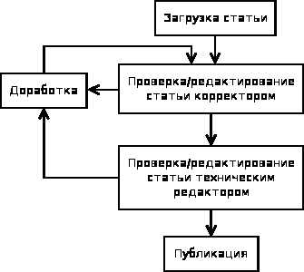

В этой статье будет рассмотрен пример создания простого маршрута для документооборота, а именно:
Итак, приступим. Допустим, у нас есть фирма TrashCo, которая между прочим занимается публикацией статей. Предлагаю реализовать вот такой маршрут для документа, описывающий процесс публикации статьи:

Для задания такого маршрута нам понадобится создать несколько файлов, а именно:
Первым делом созданим модель контента (content model), хоть она и не является обязательной частью описания бизнес-процесса (workflow). Модели контента используются для задания тех метаданных, которые мы хотим хранить для каждого документа в бизнес-процессе. В нашем случае никаких особенных данных хранить не требуется, поэтому создаем тип, унаследованный от базового типа. Файл, описывающий подобную модель может выглядеть следующим образом (tcModel.xml):
<?xml version="1.0" encoding="UTF-8"?>
<!-- Определяем новую модель -->
<model name="tc:trashmodel" xmlns="http://www.alfresco.org/model/dictionary/1.0">
<!-- Метаданные -->
<description>TrashCo Model</description>
<author>lx</author>
<version>0.0</version>
<!-- Импорт необходимых определений моделей контента -->
<imports>
<import uri="http://www.alfresco.org/model/dictionary/1.0" prefix="d" />
<import uri="http://www.alfresco.org/model/content/1.0" prefix="cm" />
</imports>
<!-- Описываем новое пространство имен -->
<namespaces>
<namespace uri="http://www.trashco.com/model/content/0.0" prefix="tc" />
</namespaces>
<!-- Описываем тип документов для статьи -->
<types>
<type name="tc:article">
<title>TrashCo Article</title>
<!-- Наследуем от базового типа -->
<parent>cm:content</parent>
</type>
</types>
</model>
<!-- Конец -->
Следующий шаг – описание бизнес-процесса. Для этого можно воспользоваться несколькими способами: создание XML руками, использование jBPM Designer, использование Activiti Modeler Activiti Modeler находится пока что в стадии разработки, собрать его из исходников мне не удалось, поэтому вариант отпадает. jBPM Designer мне показался несколько глючноватым, в связи с чем я остановился на на первом варианте. Он не так красноглаз, как кажется на первый взгляд.
Каждый маршрут должен содержать как минимум два узла (node): start-state для начального состояния и end-state для конечного. Все узлы соединяются при помощи переходов (transitions). В нашем примере мы будет использовать промежуточные узлы двух типов: task-node описывает узел, для прохождения которого необходимо привлечение человека, node – остальные узлы.
Предположим, что в компании есть штат корректоров (их пользователи состоят в группе correctors) и несколько технических редакторов, но каждый из них отвечает за публикацию статей только определенной тематики. Поэтому при создании бизнес-процесса пользователь должен выбрать конкретного технического редактора, который будет проверять статью. Ниже приведено описание процесса (workflows/PublishPaperProcess.xml):
<?xml version="1.0" encoding="UTF-8"?>
<!-- Начало описания процесса -->
<process-definition xmlns="urn:jbpm.org:jpdl-3.1" name="tcwf:publishpaper">
<!-- Исполнитель "инициатор" -->
<swimlane name="initiator" />
<!-- Исполнитель "корректор", выбирается из группы correctors -->
<swimlane name="corrector">
<assignment class="org.alfresco.repo.workflow.jbpm.AlfrescoAssignment">
<pooledactors>#{people.getGroup('GROUP_correctors')}</pooledactors>
</assignment>
</swimlane>
<!-- Исполнитель "редактор", выбирается при создании процесса -->
<swimlane name="editor">
<assignment class="org.alfresco.repo.workflow.jbpm.AlfrescoAssignment">
<actor>#{bpm_assignee}</actor>
</assignment>
</swimlane>
<!-- Исполнитель "издатель", выбирается из группы publishers -->
<swimlane name="publisher">
<assignment class="org.alfresco.repo.workflow.jbpm.AlfrescoAssignment">
<pooledactors>#{people.getGroup('GROUP_publishers')}</pooledactors>
</assignment>
</swimlane>
<!-- Начальный узел процесса -->
<start-state name="Start">
<!-- Задание для инициатора -->
<task name="tcwf:submitTask" swimlane="initiator" />
<!-- Подать статью на рассмотрение -->
<transition name="" to="Submit" />
</start-state>
<!-- Подача статьи на рассмотрение -->
<node name="Submit">
<!-- Передать корректору -->
<transition name="" to="CorrectTask"/>
</node>
<!-- Корректирование статьи -->
<task-node name="CorrectTask">
<!-- Задача для корректора -->
<task name="tcwf:correctTask" swimlane="corrector" />
<!-- Передать статью редактору -->
<transition name="approve" to="EditTask" />
<!-- Передать статью инициатору на доработку -->
<transition name="reject" to="ReviseTask" />
</task-node>
<!-- Техническое редактирование статьи -->
<task-node name="EditTask">
<!-- Задача для редактора -->
<task name="tcwf:editTask" swimlane="editor" />
<!-- Передать стаью издателю -->
<transition name="approve" to="PublishTask" />
<!-- Передать статью инициатору на доработку -->
<transition name="reject" to="ReviseTask" />
</task-node>
<!-- Доработка статьи -->
<task-node name="ReviseTask">
<!-- Задача для инициатора -->
<task name="tcwf:reviseTask" swimlane="initiator" />
<!-- Подать статьи повторно -->
<transition name="resubmit" to="Submit" />
<!-- Отменить процесс публикации статьи -->
<transition name="cancel" to="End" />
</task-node>
<!-- Публикация статьи -->
<task-node name="PublishTask">
<!-- Задача для издателя -->
<task name="tcwf:publishTask" swimlane="publisher" />
<!-- Конец процесса -->
<transition name="done" to="End" />
</task-node>
<!-- Последний узел -->
<end-state name="End"/>
</process-definition>
<!-- Конец описания процесса -->
Следующий шаг, после описания процесса – создание модели процесса (workflow model). Модель процесса описывает, что может происходить с документами на каждой стадии процесса. К примеру, мы хотим, чтобы при создании бизнес-процесса для статьи была возможность поставить галочку «Опубликовать online» – это делается путем указания аспектов (aspects) контента (tcWorkflowModel.xml).
<?xml version="1.0" encoding="UTF-8"?>
<!-- Описание модели бизнес-процесса -->
<model name="tcwf:workflowmodel" xmlns="http://www.alfresco.org/model/dictionary/1.0">
<!-- Необязательные метаданные модели -->
<description>TrashCo Workflow Model</description>
<author>lx</author>
<version>0.0</version>
<!-- Импорт необходимых описаний -->
<imports>
<import uri="http://www.alfresco.org/model/dictionary/1.0" prefix="d" />
<import uri="http://www.alfresco.org/model/bpm/1.0" prefix="bpm" />
</imports>
<!-- Описываем пространство имен для нашего процесса -->
<namespaces>
<namespace uri="http://www.trashco.com/model/workflow/1.0" prefix="tcwf" />
</namespaces>
<types>
<!-- Подача статьи -->
<type name="tcwf:submitTask">
<!-- Наследуем от bpm:startTask -->
<parent>bpm:startTask</parent>
<!-- Указываем обязательные аспекты -->
<mandatory-aspects>
<!-- Редактор -->
<aspect>bpm:assignee</aspect>
<!-- Статья может быть опубликована online -->
<aspect>tcwf:webable</aspect>
</mandatory-aspects>
</type>
<!-- Корректирование статьи -->
<type name="tcwf:correctTask">
<!-- Наследуем от bpm:workflowTask -->
<parent>bpm:workflowTask</parent>
<!-- Документ может быть отредактирован -->
<overrides>
<property name="bpm:packageItemActionGroup">
<default>edit_package_item_actions</default>
</property>
</overrides>
<mandatory-aspects>
<!-- Статья может быть опубликована online -->
<aspect>tcwf:webable</aspect>
</mandatory-aspects>
</type>
<!-- Техническое редактирование статьи -->
<type name="tcwf:editTask">
<!-- Наследуем от bpm:workflowTask -->
<parent>bpm:workflowTask</parent>
<!-- Документ может быть отредактирован -->
<overrides>
<property name="bpm:packageItemActionGroup">
<default>edit_package_item_actions</default>
</property>
</overrides>
<mandatory-aspects>
<!-- Статья может быть опубликована online -->
<aspect>tcwf:webable</aspect>
</mandatory-aspects>
</type>
<!-- Доработка статьи -->
<type name="tcwf:reviseTask">
<!-- Наследуем от bpm:workflowTask -->
<parent>bpm:workflowTask</parent>
<!-- Документ может быть отредактирован -->
<overrides>
<property name="bpm:packageItemActionGroup">
<default>edit_package_item_actions</default>
</property>
</overrides>
<mandatory-aspects>
<!-- Статья может быть опубликована online -->
<aspect>tcwf:webable</aspect>
</mandatory-aspects>
</type>
<!-- Публикация статьи -->
<type name="tcwf:publishTask">
<!-- Наследуем от bpm:workflowTask -->
<parent>bpm:workflowTask</parent>
<!-- Документ может быть только просмотрен -->
<overrides>
<property name="bpm:packageItemActionGroup">
<default>read_package_item_actions</default>
</property>
</overrides>
<mandatory-aspects>
<!-- Статья может быть опубликована online -->
<aspect>tcwf:webable</aspect>
</mandatory-aspects>
</type>
</types>
<!-- Описываем аспекты, которые будем использовать -->
<aspects>
<!-- Статью можно опубликовать online -->
<aspect name="tcwf:webable">
<title>TrashCo webable aspect</title>
<properties>
<property name="tcwf:publishOnline">
<type>d:boolean</type>
<mandatory>true</mandatory>
<multiple>false</multiple>
</property>
</properties>
</aspect>
</aspects>
</model>
Далее нужно локализовать наш бизнес-процесс, чтобы в веб-интерфейсе Alfresco отображались нормальные названия задач и кнопок (tcWorkflow_ru_RU.properties.in).
# Название бизнес-процесса
tcwf_publishpaper.workflow.title=Публикация статьи
tcwf_publishpaper.workflow.description=Подача, корректирование, техническое редактирование
# Названия задач
tcwf_publishpaper.task.tcwf_correctTask.title=Проверить и откорректировать статью
tcwf_publishpaper.task.tcwf_correctTask.description=Проверить и откорректировать статью для передачи техническому редактору
tcwf_publishpaper.task.tcwf_editTask.title=Проверить и откорректировать статью
tcwf_publishpaper.task.tcwf_editTask.description=Проверить и откорректировать статью для публикации
tcwf_publishpaper.task.tcwf_reviseTask.title=Исправить статью
tcwf_publishpaper.task.tcwf_reviseTask.description=Исправить статью для передачи на повторное рассмотрение
tcwf_publishpaper.task.tcwf_publishTask.title=Опубликовать статью
tcwf_publishpaper.task.tcwf_publishTask.description=Опубликовать статью
# Названия кнопок на узлах бизнес-процесса
tcwf_publishpaper.node.CorrectTask.transition.approve.title=Одобрить статью
tcwf_publishpaper.node.CorrectTask.transition.approve.description=Одобрить статью и направить ее техническому редактору
tcwf_publishpaper.node.CorrectTask.transition.reject.title=Отклонить статью
tcwf_publishpaper.node.CorrectTask.transition.reject.description=Отклонить статью и отправить ее на доработку
tcwf_publishpaper.node.EditTask.transition.approve.title=Одобрить статью
tcwf_publishpaper.node.EditTask.transition.approve.description=Одобрить статью и отправить ее издателю
tcwf_publishpaper.node.EditTask.transition.reject.title=Отклонить статью
tcwf_publishpaper.node.EditTask.transition.reject.description=Отклонить статью и отправить ее на доработку
tcwf_publishpaper.node.ReviseTask.transition.resubmit.title=Подать на рассмотрение повторно
tcwf_publishpaper.node.ReviseTask.transition.resubmit.description=Повторно подать статью на рассмотрение корректору
tcwf_publishpaper.node.ReviseTask.transition.cancel.title=Отменить публикацию статьи
tcwf_publishpaper.node.ReviseTask.transition.cancel.description=Публикация завершена
tcwf_publishpaper.node.PublishTask.transition.done.description=Отменить публикацию статьи и завершить бизнес-процесс
tcwf_publishpaper.node.PublishTask.transition.done.title=Готово
Alfresco понимает файлы локализации только в ASCII кодировке, поэтому приведенный выше файл нужно обработать при помощи скрипта convert.sh (путь до утилиты native2ascii зависит от особенностей вашей установки):
#!/bin/bash
for x in `ls *.in`; do
cat $x | /opt/java/bin/native2ascii | grep -ve '^#'> `basename $x .in`;
done;
Последний шаг – добавление необходимых кнопок и прочих элементов интерфейса в веб-клиент Alfresco(web-client-config-custom.xml):
<alfresco-config>
<config evaluator="string-compare" condition="Languages">
<languages>
<language locale="ru_RU">Russian</language>
</languages>
</config>
<!-- Добавляем новый тип в список контента -->
<config evaluator="string-compare" condition="Content Wizards">
<content-types>
<type name="tc:article" />
</content-types>
</config>
<!-- Отображение бизнес процессов -->
<!-- Подача статьи -->
<config evaluator="node-type" condition="tcwf:submitTask" replace="true">
<property-sheet>
<!-- Разделитель -->
<separator name="sep1" display-label-id="general" component-generator="HeaderSeparatorGenerator" />
<!-- Описание процесса -->
<show-property name="bpm:workflowDescription" component-generator="TextAreaGenerator" />
<!-- Комментарий -->
<show-property name="bpm:comment" component-generator="TextAreaGenerator" />
<!-- Выбор редактора. Переопределяем текст, который будет отображаться -->
<show-association name="bpm:assignee" display-label-id="tcwf_assignee_label" />
<!-- Опубликовать статью online -->
<show-property name="tcwf:publishOnline" display-label-id="tcwf_publish_online_label" />
</property-sheet>
</config>
<!-- Корректирование статьи -->
<config evaluator="node-type" condition="tcwf:correctTask" replace="true">
<property-sheet>
<!-- Разделитель -->
<separator name="sep1" display-label-id="general" component-generator="HeaderSeparatorGenerator" />
<!-- Комментарий -->
<show-property name="bpm:comment" component-generator="TextAreaGenerator" />
<!-- Статус -->
<show-property name="bpm:status" />
<!-- Опубликовать статью online -->
<show-property name="tcwf:publishOnline" display-label-id="tcwf_publish_online_label" read-only="true"/>
</property-sheet>
</config>
<!-- Редактирование статьи -->
<config evaluator="node-type" condition="tcwf:editTask" replace="true">
<property-sheet>
<!-- Разделитель -->
<separator name="sep1" display-label-id="general" component-generator="HeaderSeparatorGenerator" />
<!-- Комментарий -->
<show-property name="bpm:comment" component-generator="TextAreaGenerator" />
<!-- Статус -->
<show-property name="bpm:status" />
<!-- Опубликовать статью online -->
<show-property name="tcwf:publishOnline" display-label-id="tcwf_publish_online_label" />
</property-sheet>
</config>
<!-- Публикация статьи -->
<config evaluator="node-type" condition="tcwf:publishTask" replace="true">
<property-sheet>
<!-- Разделитель -->
<separator name="sep1" display-label-id="general" component-generator="HeaderSeparatorGenerator" />
<!-- Комментарий -->
<show-property name="bpm:comment" component-generator="TextAreaGenerator" />
<!-- Статус -->
<show-property name="bpm:status" />
<!-- Опубликовать статью online -->
<show-property name="tcwf:publishOnline" display-label-id="tcwf_publish_online_label" read-only="true" />
</property-sheet>
</config>
<!-- Правка статьи -->
<config evaluator="node-type" condition="tcwf:reviseTask" replace="true">
<property-sheet>
<!-- Разделитель -->
<separator name="sep1" display-label-id="general" component-generator="HeaderSeparatorGenerator" />
<!-- Комментарий -->
<show-property name="bpm:comment" component-generator="TextAreaGenerator" />
<!-- Статус -->
<show-property name="bpm:status" />
<!-- Опубликовать статью online -->
<show-property name="tcwf:publishOnline" display-label-id="tcwf_publish_online_label" />
</property-sheet>
</config>
</alfresco-config>
Локализация веб-клиента Alfresco (webclient_ru_RU.properties.in):
tcwf_assignee_label=Редактор
tcwf_publish_online_label=Опубликовать online
Этот файл также нужно конвертировать в ASCII кодировку при помощи convert.sh. Для загрузки workflow и моделей требуется создание ещё одного файла, который Alfresco просмотрит при старте и импортирует всё, что нужно (trashco-model-context.xml):
<?xml version='1.0' encoding='UTF-8'?>
<!-- Описание моделей и процессов для загрузки -->
<!DOCTYPE beans PUBLIC '-//SPRING//DTD BEAN//EN' 'http://www.springframework.org/dtd/spring-beans.dtd'>
<beans>
<!-- Регистрируем ресурсы -->
<bean id="extension.workflowBootstrap" parent="workflowDeployer">
<property name="workflowDefinitions">
<list>
<props>
<!-- Тип процесса -->
<prop key="engineId">jbpm</prop>
<!-- Путь -->
<prop key="location">alfresco/extension/workflows/PublishPaperProcess.xml</prop>
<!-- MIME -->
<prop key="mimetype">text/xml</prop>
<!-- Загружать каждый раз -->
<prop key="redeploy">true</prop>
</props>
</list>
</property>
<!-- Локализация -->
<property name="labels">
<list>
<value>alfresco.extension.tcWorkflow</value>
</list>
</property>
<!-- Список моделей для загрузки -->
<property name="models">
<list>
<value>alfresco/extension/tcModel.xml</value>
<value>alfresco/extension/tcWorkflowModel.xml</value>
</list>
</property>
</bean>
</beans>
<!-- Конец описания -->
Теперь можно устанавливать наш бизнес-процесс, для этого созданные файлы нужно скопировать в $ALFRESCO/tomcat/shared/classes/alfresco/extension. Чтобы избежать ошибок вида
ERROR [org.springframework.web.context.ContextLoader] Context initialization failed
java.util.MissingResourceException: Can't find bundle for base name alfresco.extension.tcWorkflow, locale en_US
нужно сделать ссылку tcWorkflow.properties → tcWorkflow_ru_RU.properties (или просто скопировать). Перезапускаем Alfresco и наслаждаемся нашим процессом ;)
Так же полезно прочитать обсуждение этой статьи...
Q: У меня такой вопрос.В файле PublishPaperProcess.xml есть значение 'GROUP_correctors' и 'GROUP_publishers'. Не могли бы вы описать эти значения? В алфреско нужно обязательно заводить такие группы?
A: Сам отвечу ))) Да. Оказывается необходимо создать группы "correctors" и "publishers". Тогда все проходит без ошибок :)
Q: Пробую исправить стандартный процесс, но он не меняется. В чем может быть дело? Возможно ли изменить или удалить стандартные процессы?
Как удалить я понял. Но вот как исправить? Смотрю в сторону файлов ы каталоге tomcat\webapps\alfresco\WEB-INF\classes\alfresco\.
Да, именно в этой директории. Дальше находите правильный процесс в директории workflow и редактируете нужный процесс. Есть более правильный вариант с точки зрения архитектуры alfresco - удалить оттуда нужный workflow и скопировать измененную версию в tomcat/shared/classes/alfresco/. В таком случае Ваш процесс сохранится и не "умрет" после апдейта системы.
Крайне не рекомендую удалять/изменять стандартные workflow, потому что многие из них используются внутри alfresco. Если они вам просто мешают в веб-интерфейсе, их лучше скрыть. Вот пример для share: http://niketa-alfresco3.blogspot.com/2011/03/how-to-exclude-workflow-from-list-in.html
Тоже вариант.. Стандартный скрыть, но создать нестандартный на его базе..
Никак не могу найти файл, где для стандартных процессов прописано то, что у Вас в статье в share-config-custom.xml.
Посмотрите tomcat/webapps/share/WEB-INF/classes/alfresco/share-workflow-form-config.xml.